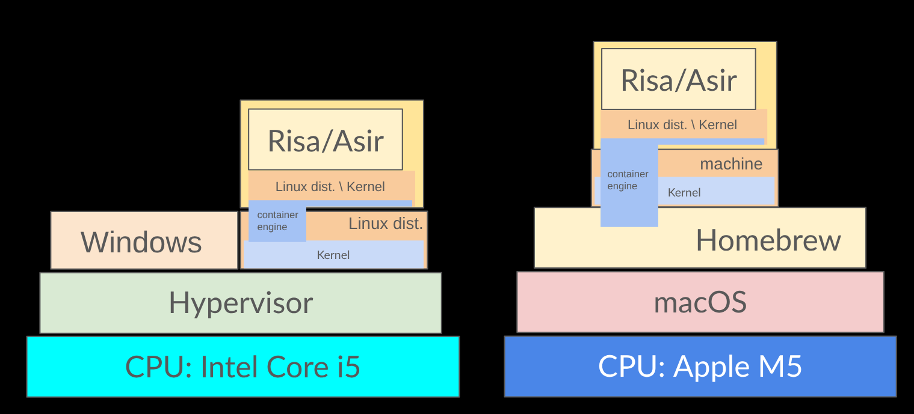

mathlibre-cについて
濱田龍義（日本大学/OCAMI）
2026年3月27日（金） 16:40-17:30
金沢大学角間キャンパス

Operating System
Hardware
Operating System
Operating System
Hardware
Operating System
Application
Operating System
Hardware
Windows
Hardware
Windows
Windows 11
Hardware
Windows
Application
Windows 11
Hardware
Linux
Hardware
Linux
Linux
Hardware
Linux
Application
Linux
Hardware
Linux
Application
Linux
Kernel
Hardware
Virtual Machine
Hardware
Virtual Machine
Operating System
Hardware
Virtual Machine
Virtual Machine
Operating System
Hardware
Virtual Machine
Operating System
Virtual Machine
Operating System
Hardware
Virtual Machine
Application
Operating System
Virtual Machine
Operating System
Hardware
Windows
Application
Windows 11
Hardware
WSL2
Windows 11
Hypervisor
Hardware
WSL2
Windows 11
Linux
Hypervisor
Hardware
WSL2
App
App
Windows 11
Linux
Hypervisor
Hardware
Container
Linux
Kernel
Hardware
Container
Container Engine
Linux
Kernel
Hardware
OSの概略図

Linux環境の概略図

Linuxパッケージ管理
- APT (Advanced Packaging Tool)
- DNF (Dandified Yum)
仮想環境の概略図

WSL2 や Homebrew の利用

WSL2やHomebrewにより，Linuxライクに利用可能
インストールにはLinuxの知識が必要
Linuxパッケージの追加
- make
- 自動化ツールの一種
- git
- 分散型バージョン管理システム
- podman
- コンテナエンジン
- 例1)
apt install make git podman - 例2)
dnf install make git podman
コンテナ環境
- 2013年3月に Docker が公開される
- https://www.docker.com/
- Linux上で動作するコンテナ環境
- サーバ環境を中心に普及
- docker.io, quay.io, ghcr.io 等のレジストリサービス
- 2018年 RedHatより Podman を公開
- DockerやPodmanのことをコンテナエンジンと呼ぶ
- コンテナとは？
コンテナ環境の概要と利点

- 軽量化
- 環境のパッケージ化
- 依存関係の分離
- 配布，取得が容易
- 再現性
Win, macのコンテナ環境

コンテナ環境 mathlibre-c の開発
動作環境例
- Linux
- Windows + WSL2
- macOS + Homebrew
環境構築後は全ての環境で同じように利用可能
コンテナ mathlibre-c の利用
git clone https://github.com/knxm/mathliber-c
cd mathlibre-c
make
podman pull --platform=linux/amd64 ghcr.io/knxm/openxm:latest
Trying to pull ghcr.io/knxm/openxm:latest...
Getting image source signatures
Copying blob sha256:51bc91e685e7ff3b6f6cb15249b350bc325f2d77321392898dcf37b557bd767b
Copying blob sha256:d860a1ef45bacf2ed2c1fb298a46a746e3fedb29b0835875128e4194f7e42c2f
Copying blob sha256:d8152a770ab0953434cd44cb0c44a878f385e99463ba787fa63599f9ebfc06d5
Copying blob sha256:b93b1bed91448ad53e6d7b0e2b47509fc966ac8a25a289770a1a9f1ab16f49df
Copying blob sha256:59a024026d2d06da1f1242eaf9ee8982c189a951ff70d58e6dbca1e0e58a303b
Copying blob sha256:73837a82eb8c09e6ec22ae06cf92c3ad65f070c2c03457a749b0604f976d4163
Copying blob sha256:1e6818064d4c78cf7efabdf2b8ceff5f592dfa0fcb0d07ee9c8035cb202c5e7d
Copying blob sha256:ac49fa29d8a9b58f49a34be846d90fe8456ccdd020851cfe4eed54b53646e0f9
Copying blob sha256:43f125477c3b3e6eef2019ec81bdc4d6c85c280b130ce2b9f85f5375e2f54fb0
Copying config sha256:d1fb0984aba9908c5e93cc991396a443e21442501fc805ecf6f142ee3b5e3610
Writing manifest to image destination
d1fb0984aba9908c5e93cc991396a443e21442501fc805ecf6f142ee3b5e3610
podman run -it --rm --name openxm --hostname mathlibre --userns=keep-id --platform=linux/amd64 -u 501:20 -e DISPLAY=host.docker.internal:0 -v "/Users/hamada/mathlibre-c/work:/work" -w /work ghcr.io/knxm/openxm:latest openxm asir
This is Risa/Asir, full GMP Version 20250329 (Kobe Distribution).
Copyright (C) 1994-2000, all rights reserved, FUJITSU LABORATORIES LIMITED.
Copyright 2000-2021, Risa/Asir committers, http://www.openxm.org/.
GC 7.6.12 copyright 1988-2018, H-J. Boehm, A. J. Demers, Xerox, SGI, HP, I. Maidanski.
Debug windows of ox servers will not be opened. Set Xm_noX=0 to open it.
OpenXM/Risa/Asir-Contrib $Revision$ (20250117), Copyright 2000-2025, OpenXM.org committers
helph(); [html help], ox_help(0); ox_help("keyword"); ox_grep("keyword");
for help messages (unix version only).
http://www.math.kobe-u.ac.jp/OpenXM/Current/doc/index-doc.html
[2113]
mathlibre-c
- openxm
- Risa/Asir (OpenXM) amd64 バイナリコンテナ
- Intel系CPU用, Apple SiliconではQEMU上で動作（低速）
- 約860MB
- openxm_from_git
- Risa/Asir (OpenXM) ソースビルドコンテナ
- CPUに合わせてソースコードからビルド（高速）
- 約4GB
どちらの場合もリポジトリghcr.ioから必要ファイルを取得
まとめ
- WSL2やHomebrewの存在によりLinux環境を容易に構築可能
- DockerやPodman等のコンテナエンジンの普及
- Risa/Asir(OpenXM)のPodmanコンテナを作成
- 容易に他の数学ソフトウェアにも転用可能
- 教育研究用途で利用可能
- リポジトリサービスghcr.ioで配布可能
- 研究結果再現性の確保